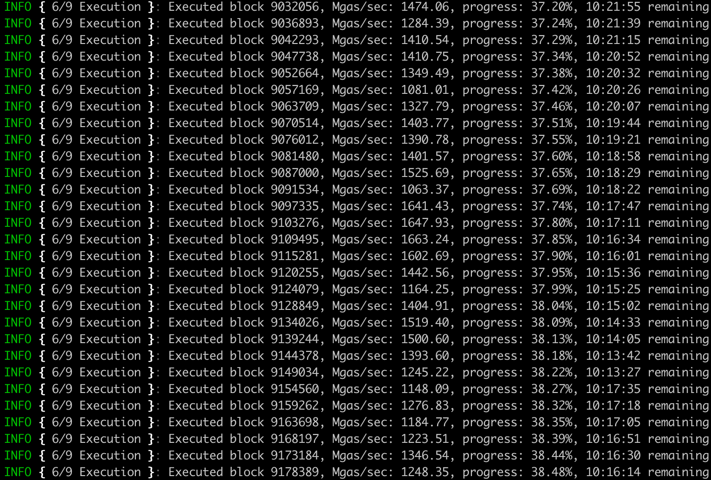

Akula: the fastest Ethereum node ever built
Akula is a next-generation implementation of Ethereum protocol ("client") written in Rust.
Akula (Акула) is pronounced as ah-koo-lah and stands for shark in Russian.
Key benefits:
Much lower disk footprint: <3TB for Ethereum mainnet archive node
Faster sync speed:
- An archive full validation node can be bootstrapped in under 3 days.
- Performance improvements allow to run even on HDD.
Crash resilience:
- Forceful shutdown or power failure cannot damage Erigon’s database.
Extremely fast and rich historical state API:
eth_calland Parity Trace API implemented- Out-of-the-box support for Otterscan: very-fast and privacy-friendly local block explorer.
gRPC alternative to web3 JSONRPC API
Here is how fast execution is: look at Mgas/s.

Network & consensus engine support
Akula supports the following networks out of the box:
- Ethereum ("mainnet") *
- Sepolia *
- Goerli *
- Ropsten *
- Rinkeby
Additionally, users can join any other network, provided their own chain specification file, and if the network uses any of the following consensus engines:
- Ethash
- Ethereum beacon chain consensus *
- Clique
Akula does not support any other EVM-based or EVM-like networks except as listed here.
[*] Requires running Lighthouse node instance pointed to Akula's engine API RPC endpoint